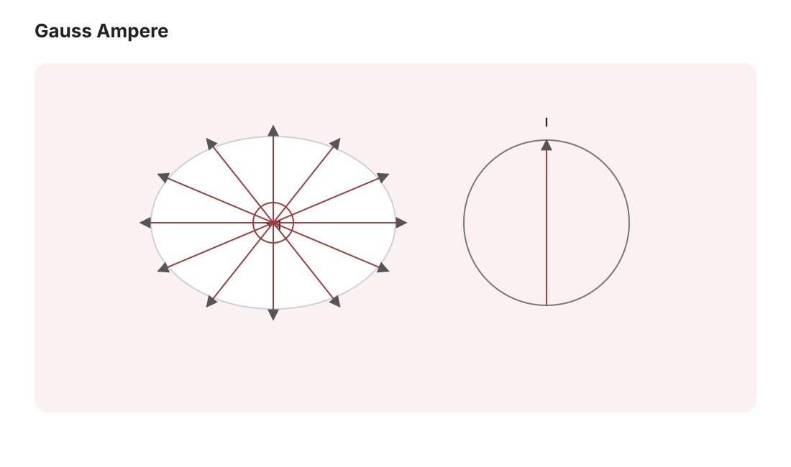
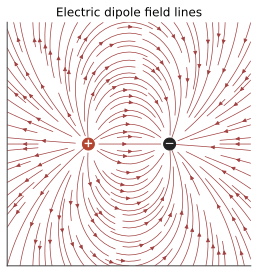

电磁 I · 静电与静磁
对标：Griffiths EM §2–5 ｜ 前置：数分 VI（三大公式）、pde-01（Laplace） 电磁学前半是"矢量微积分的物理正身"：Gauss 定律 = 散度定理的物理、环路定律 = Stokes 定理的物理。本页把静电静磁的骨架立起来：两对方程、势的语言、以及解题的三板斧（对称性 Gauss、镜像法、分离变量）。
1. 静电：从 Coulomb 到 Gauss


点电荷场 \(\mathbf E = \frac{1}{4\pi\varepsilon_0}\frac{q}{r^2}\hat{\mathbf r}\) 叠加成一般场。两条等价定律【推导】：
Gauss 定律：\(\oint\mathbf E\cdot d\mathbf A = \frac{Q_{\text{enc}}}{\varepsilon_0}\) ⟺ \(\nabla\cdot\mathbf E = \frac{\rho}{\varepsilon_0}\)（点电荷通量 = \(\frac{q}{\varepsilon_0}\) 与半径无关——\(\frac{1}{r^2}\) 与球面积 \(r^2\) 恰好相消，平方反比律的几何本质；散度定理（数分 VI）升级为微分形式；\(\nabla\cdot\frac{\hat{\mathbf r}}{r^2} = 4\pi\delta^3(\mathbf r)\)——pde2-01 的 δ 在物理的原产地）。
无旋性：\(\nabla\times\mathbf E = 0\)（中心力保守，mech-01/数分 VI）⇒ 标势 \(\mathbf E = -\nabla V\)，\(V = \frac{1}{4\pi\varepsilon_0}\int\frac{\rho\,dV'}{|\mathbf r - \mathbf r'|}\)。
合并即泊松方程 \(\nabla^2 V = -\frac{\rho}{\varepsilon_0}\)（真空处 Laplace）——静电学 = 椭圆 PDE 的边值问题（pde-01/pde2-03 的物理主顾；调和函数的极值原理翻译成"电势无内部极值 ⇒ 空腔屏蔽"）。
解题三板斧：
- 对称性 + Gauss（球/柱/面三种对称直接积分——例 1）；
- 镜像法：接地导体旁的点电荷 ⟺ 镜像电荷的双电荷问题（唯一性定理背书：边界条件相同则解相同【骨架：两解之差调和且边界为零 ⇒ 恒零——能量积分或极值原理】）；
- 分离变量：球坐标下 Laplace 方程的解 = Legendre 多项式级数（mp-01 的特殊函数在此上岗）。
导体与电容：静电平衡 ⇒ 导体内 \(\mathbf E = 0\)、表面等势、电荷聚于表面（曲率大处密——尖端放电）；电容 \(C = Q/V\)，能量 \(U = \frac12 CV^2 = \frac{\varepsilon_0}{2}\int E^2\,dV\)——能量储于场中（不是电荷上）：场的实在性第一证据（em-03 展开）。
2. 静磁：从 Biot–Savart 到 Ampère
电流产生磁场：\(d\mathbf B = \frac{\mu_0}{4\pi}\frac{I\,d\boldsymbol\ell\times\hat{\mathbf r}}{r^2}\)（Biot–Savart）。两条微分定律：
（环路定律 ⟺ Stokes 定理（数分 VI）；\(\nabla\cdot\mathbf B = 0\) ⇒ 矢势 \(\mathbf B = \nabla\times\mathbf A\)——"无散场必是旋度"，Poincaré 引理（grad-math 流形 II）的物理化身；规范自由 \(\mathbf A \to \mathbf A + \nabla\chi\) 首次登场——它将长成 20 世纪物理的中心思想（pp-01））。
静电静磁对照表（结构之美）：
| 静电 | 静磁 | |
|---|---|---|
| 源 | 电荷 \(\rho\) | 电流 \(\mathbf J\) |
| 散度 | \(\rho/\varepsilon_0\) | \(0\)（无磁单极） |
| 旋度 | \(0\) | \(\mu_0\mathbf J\) |
| 势 | 标势 \(V\) | 矢势 \(\mathbf A\) |
| 解题 | Gauss 面 | Ampère 环 |
受力：Lorentz 力 \(\mathbf F = q(\mathbf E + \mathbf v\times\mathbf B)\)——磁力不做功（\(\perp \mathbf v\)）；回旋运动 \(\omega_c = \frac{qB}{m}\)（质谱仪、回旋加速器、极光的一条公式）。
3. 介质一瞥（宏观场论的雏形）
极化 \(\mathbf P\)、磁化 \(\mathbf M\) 把束缚电荷/电流打包：\(\mathbf D = \varepsilon_0\mathbf E + \mathbf P\)、\(\mathbf H = \frac{\mathbf B}{\mu_0} - \mathbf M\)——宏观 Maxwell 方程用自由源写（"平均掉微观自由度换有效理论"——粗粒化思想的第一次出场，重整化群（asm-03）哲学的远祖）。线性介质 \(\varepsilon, \mu\)；边界条件（法向 \(D\)、切向 \(E\) 连续等）由积分定律跨界面收缩得到【骨架】。
4. 练习与要点
例 1（Gauss 三板斧样板） 均匀带电球体：外部 \(E = \frac{Q}{4\pi\varepsilon_0 r^2}\)（如点电荷）、内部 \(E = \frac{Qr}{4\pi\varepsilon_0R^3}\)（线性）——"内部只看包住的电荷"；同法立得无限长线（\(\propto 1/r\)）与无限大面（常数）——三种衰减律一次记齐。
例 2（镜像法经典） 接地无限平面上方 \(d\) 处点电荷 \(q\)：镜像 \(-q\) 于 \(-d\)，表面感应电荷密度 \(\sigma(r) = \frac{-qd}{2\pi(r^2 + d^2)^{3/2}}\)（对 \(V\) 求法向导数），总感应电荷 \(= -q\)（积分验证）——一套流程三个结论。
例 3（Ampère 环样板） 无限螺线管：环路取跨壁矩形 ⇒ 内部 \(B = \mu_0 nI\) 均匀、外部为零——MRI 磁体、电感器的第一公式；能量密度 \(\frac{B^2}{2\mu_0}\)（em-03）由此可算电感储能。\(\blacksquare\)
下一页：让场随时间动起来——Faraday 感应、位移电流的补丁，Maxwell 方程组合体，然后光从方程里跑出来。